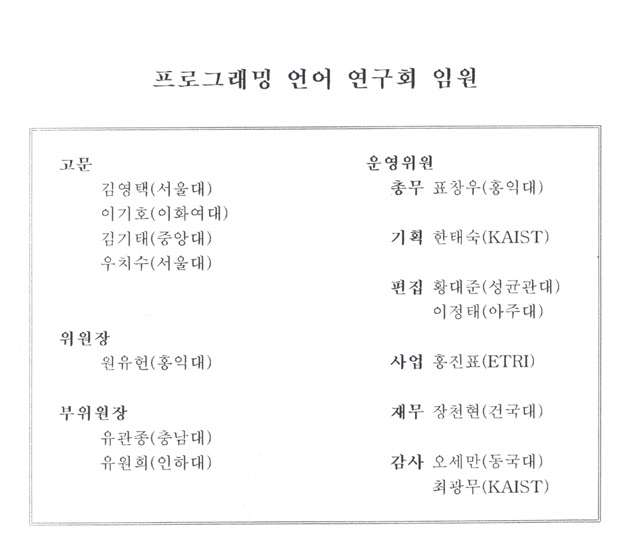
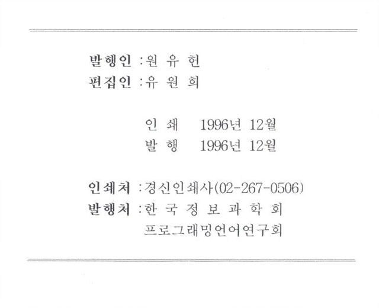

프로그래밍언어연구회지 제10권 제1호 (1996년 12월)
권두언:
원유헌
논문
실시간 제어언어의 설계 및 실행시간 분석 기법
백정현, 변용현, 원유헌 (홍익대학교)
ACK에서 SPARC코드 생성을 위한 레지스터 할당 기법
고광만, 오세만 (동국대학교)
타입 환경상의 편리한 프로그램 작성을 위한 도구
이욱세, 편기현, 이광근 (KAIST)
학회소식


프로그래밍언어 연구회